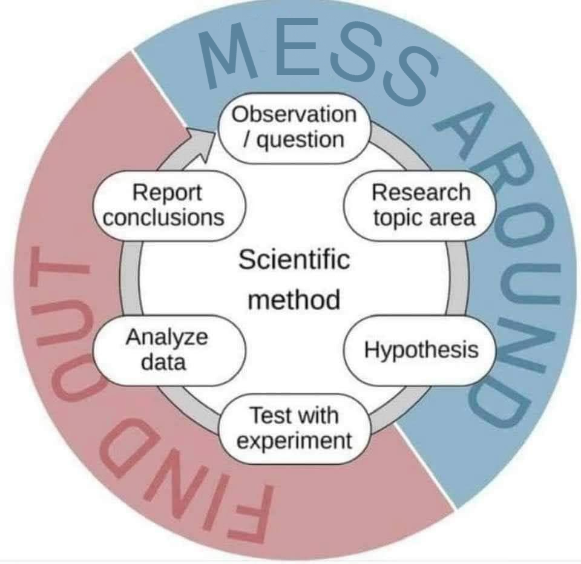

Atharva Dhamankar
Project Corner
As far as I can remember, I've always been a tinkerer. I started a young child with a unbridled curiosity (that may or may not have gotten me into serious trouble more than once), a wild imagination and an urge to manifest that imagination.
For me that drive was channeled into making my own custom toys, mechanisms, designs and what not. Being obsessed with the concept of flight and the simplicity with which birds roam the skies, I gravitated towards paper airplanes and designing a multitude of different styles, fiddling around with each plane for hours on end, making sure that the design was nothing less than perfect.
Being skilled in origami had taught me that precise creases at each level were of utmost importance if the final product was to turn out good because even a minor error at the start would cascade into a huge problem as the folds overlapped each other (coder homies reeeepreseeent!)
This knowledge allowed me to make models so precise that I could control the exact flight pattern of each plane. Overtime I came to the realization that there comes a point where you no longer actively fold the paper, but just let it fold itself. Let the paper take the shape it wishes. (But that's a story for another day.)
Science had always been a subject that I dearly loved because I saw that my analytical view and ability to see the same thing from a different perspective was greatly encouraged in Science. Asking questions and trying to find out why are the fundamental principles of science XD.
As a result as I got older and older, my "toys" began taking a twist towards mixing and merging mechanical mechanisms and explosive chemistry into my creations. Along with that my fascination of electronics meant that any broken electronic device from the house would be my property from there on.
I remember one specific incident where my current soldering iron was not hot enough to safely solder the PCB without destroying the IC and so my next instant thought was, why not make my own soldering iron. Took me a bunch of time to salvage the required materials from old electronics but in the end i was able to make a temperature controlled soldering iron from scratch.
This kind of DIY attitude has somehow seeped into my whole life and now every time I have a problem rather than even considering about complaining how something doesn't work, I tend to automatically think "How can I fix this or do this better?" and the cogs in my brain start turning.
Now being able to understand and minorly tweak around with computers, a whole new world of projects, problems, puzzles and questions have opened up for me.
These are some of the my favorites.
For me that drive was channeled into making my own custom toys, mechanisms, designs and what not. Being obsessed with the concept of flight and the simplicity with which birds roam the skies, I gravitated towards paper airplanes and designing a multitude of different styles, fiddling around with each plane for hours on end, making sure that the design was nothing less than perfect.
Being skilled in origami had taught me that precise creases at each level were of utmost importance if the final product was to turn out good because even a minor error at the start would cascade into a huge problem as the folds overlapped each other (coder homies reeeepreseeent!)
This knowledge allowed me to make models so precise that I could control the exact flight pattern of each plane. Overtime I came to the realization that there comes a point where you no longer actively fold the paper, but just let it fold itself. Let the paper take the shape it wishes. (But that's a story for another day.)
Science had always been a subject that I dearly loved because I saw that my analytical view and ability to see the same thing from a different perspective was greatly encouraged in Science. Asking questions and trying to find out why are the fundamental principles of science XD.

the scientific process in a nutshell
As a result as I got older and older, my "toys" began taking a twist towards mixing and merging mechanical mechanisms and explosive chemistry into my creations. Along with that my fascination of electronics meant that any broken electronic device from the house would be my property from there on.
I remember one specific incident where my current soldering iron was not hot enough to safely solder the PCB without destroying the IC and so my next instant thought was, why not make my own soldering iron. Took me a bunch of time to salvage the required materials from old electronics but in the end i was able to make a temperature controlled soldering iron from scratch.
This kind of DIY attitude has somehow seeped into my whole life and now every time I have a problem rather than even considering about complaining how something doesn't work, I tend to automatically think "How can I fix this or do this better?" and the cogs in my brain start turning.
Now being able to understand and minorly tweak around with computers, a whole new world of projects, problems, puzzles and questions have opened up for me.
These are some of the my favorites.
Ongoing Projects
Stuff that im currently working on.Completed Projects
An archive of completed projects and related banter.Upcoming Projects
Projects that I plan to undertake in the near future or concepts that im super excited about.Blueprint Corner
Tutorials of how to use my projects if you want to customize them for yourself.Where Programmers Cry
Finally, one of my most favourite sections, this page is dedicated to small personal anecdoetes where me or my friends have metaphorically used a spanner to hammer a nail.Turns out sometimes spanners are good for hammering nails. Whod've thunk?
⚠️ WARNING: ⚠️
Such acts are performed only experts and should not be replicated at home under any circumstance 😆
P.S. the classification of what im working on and what is completed, may not be perfectly acurate here since I dont regualarly update my website, but I dont think that'll be a big issue